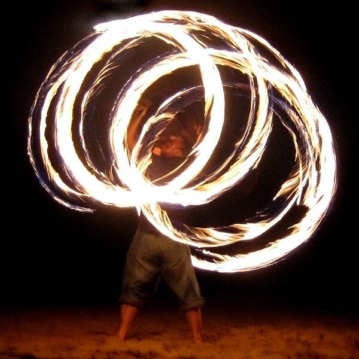
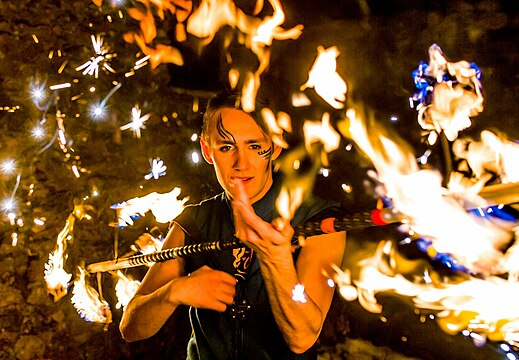
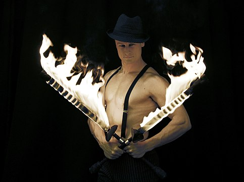

Fire Performance
Fire performance is a group of performance arts or skills that involve the manipulation of fire. Fire performance typically involves equipment or other objects made with one or more wicks which are designed to sustain a large enough flame to create a visual effect.
Fire performance includes skills based on juggling, baton twirling, poi spinning, and other forms of object manipulation. It also includes skills such as fire reathing, fire eating, and body burning; sometimes called fakir skills. Fire performance has various styles of performance including fire dancing; the use of fire as a finale in an otherwise non-fire performance; and the use of fire skills as 'dangerous' stunts. Performances can be done as choreographed routines to music (this type being related to dance or rhythmic gymnastics); as freestyle (performed to music or not) performances; or performed with vocal interaction with the audience. Some aspect of fire performance can be found in a wide variety of cultural traditions and rituals from around the world.
History
One of the earliest mentions of fire performance was at the ceremony of Simchat Beit HaShoeivah during the holidays of sukkot of the Second Temple by the Jews in Jerusalem Circa 10AD - 70AD. It has been said about Rabbi Simeon ben Gamaliel that when he was rejoicing with the joy of the Water-Drawing he would take eight burning torches in one hand and toss them upwards; he tossed one and caught one, and never did one touch the other. [1]
Sub Heading #1
Ancient Aztecs performed a fire dance dedicated to Xiuhtecuhtli, the god of fire.[2] The Aztec fire dance is performed today for tourists in Mexico. In Bali, the Angel Dance and the Fire Dance, regularly performed for tourists, have origins in ancient rituals. Both the Angel Dance and the Fire Dance originated in a trance ritual called the sanghyang, a ritual dance "performed to ward off witches at the time of an epidemic."[3] Also known as the "horse dance" men perform the dance by holding rods representing horses, while leaping around burning coconut husks, and walking through the flames. Jamaica, French Polynesia, Antigua, Cuba and Saint Lucia are other locations where fire dances are recreated for tourists. The Siddha Jats of the Thar Desert in India perform traditional fire dances as part of the Spring festival. Fire dancing is performed to music played on drums and the behr. There are variations of the fire dancing; men often perform a dance that involves walking on hot coals. A large fire is created and allowed to burn down until it is a pit of glowing embers. The performers then jump in and out of the pit kicking up the embers to create showers of sparks while women perform a dance while balancing flaming tin pots on their heads. Today this ritual is often performed for tourists.
Ancient Aztecs performed a fire dance dedicated to Xiuhtecuhtli, the god of fire.[2] The Aztec fire dance is performed today for tourists in Mexico. In Bali, the Angel Dance and the Fire Dance, regularly performed for tourists, have origins in ancient rituals. Both the Angel Dance and the Fire Dance originated in a trance ritual called the sanghyang, a ritual dance "performed to ward off witches at the time of an epidemic."[3] Also known as the "horse dance" men perform the dance by holding rods representing horses, while leaping around burning coconut husks, and walking through the flames. Jamaica, French Polynesia, Antigua, Cuba and Saint Lucia are other locations where fire dances are recreated for tourists. The Siddha Jats of the Thar Desert in India perform traditional fire dances as part of the Spring festival. Fire dancing is performed to music played on drums and the behr. There are variations of the fire dancing; men often perform a dance that involves walking on hot coals. A large fire is created and allowed to burn down until it is a pit of glowing embers. The performers then jump in and out of the pit kicking up the embers to create showers of sparks while women perform a dance while balancing flaming tin pots on their heads. Today this ritual is often performed for tourists.
Sub-Heading #2
Another form of fire dancing comes from the people of Polynesia. It is believed that the Maori people of New Zealand would soak a ball attached to string in fuel, light it and perform dancing rituals. "Poi" is a Maori word meaning “ball on a string" making the Maori people the originators of the flow equipment still popular today.[4] See Poi (performance art).
Ancient Aztecs performed a fire dance dedicated to Xiuhtecuhtli, the god of fire.[2] The Aztec fire dance is performed today for tourists in Mexico. In Bali, the Angel Dance and the Fire Dance, regularly performed for tourists, have origins in ancient rituals. Both the Angel Dance and the Fire Dance originated in a trance ritual called the sanghyang, a ritual dance "performed to ward off witches at the time of an epidemic."[3] Also known as the "horse dance" men perform the dance by holding rods representing horses, while leaping around burning coconut husks, and walking through the flames. Jamaica, French Polynesia, Antigua, Cuba and Saint Lucia are other locations where fire dances are recreated for tourists. The Siddha Jats of the Thar Desert in India perform traditional fire dances as part of the Spring festival. Fire dancing is performed to music played on drums and the behr. There are variations of the fire dancing; men often perform a dance that involves walking on hot coals. A large fire is created and allowed to burn down until it is a pit of glowing embers. The performers then jump in and out of the pit kicking up the embers to create showers of sparks while women perform a dance while balancing flaming tin pots on their heads. Today this ritual is often performed for tourists.
Fire Apparatus
Fire performance is usually performed with props that have specifically been made for the purpose. Fire torches, fire staffs, fire poi, fire hula hoops, fire whips, and other fire props are all readily available.
Different Types:
- Poi – A pair of roughly arm-length chains with handles attached to one end, and bundle of wicking material on the other.
- Staff – A metal or wooden tube ranging from 1–2 m long with wicking material applied to one or both ends. Staffs are typically used individually or in pairs. juggling three or more is also possible.
- Dragonstaff – A metal or wooden tube around 2 m long where each end consists of three or more wicks arranged in a wheel. Dragon staves are more often rolled on the body rather than spun.
- Fire hoop – hoop with spokes and wicking material attached.
- Fan – A large metal fan with one or more wicks attached to the edges.
- Fire umbrella – an umbrella-like performance prop that can be constructed in a variety of ways.
- Fire meteor – A long length of chain or rope with wicks, or small bowls of liquid fuel, attached to both ends.
- Nunchaku – Nunchaku with wicking material, usually at either end.
- Fire stick – Like a traditional devil stick, with wicks on both ends of the central stick.
- Torch – A club or baton, with a wick on one end, and swung like Indian clubs or tossed end-over-end like juggling clubs.
- Fire knife – Short stave with blade attached to the end and wicking material applied to the blade. Fire knives are the traditional Polynesian fire implement and have been in use since the 1940s.
- Fire rope dart – A wick, sometimes wrapped around a steel spike, at the end of a rope or chain ranging from 6–15 feet long, with a ring or other handle on the opposite end.
- Fire wand – a short metal rod, usually 28 inches long with two wicks on each end and a length of fire-resistant string threaded through the middle. The wand is balanced to stay upright and gives the appearance that it is levitating around the user. It is also known as a levitation wand, levi-stick or flow wand.
Sub Heading #3
Fire performance includes skills based on juggling, baton twirling, poi spinning, and other forms of object manipulation. It also includes skills such as fire reathing, fire eating, and body burning; sometimes called fakir skills. Fire performance has various styles of performance including fire dancing; the use of fire as a finale in an otherwise non-fire performance; and the use of fire skills as 'dangerous' stunts. Performances can be done as choreographed routines to music (this type being related to dance or rhythmic gymnastics); as freestyle (performed to music or not) performances; or performed with vocal interaction with the audience. Some aspect of fire performance can be found in a wide variety of cultural traditions and rituals from around the world.
Sub Heading #4
Fire performance includes skills based on juggling, baton twirling, poi spinning, and other forms of object manipulation. It also includes skills such as fire reathing, fire eating, and body burning; sometimes called fakir skills. Fire performance has various styles of performance including fire dancing; the use of fire as a finale in an otherwise non-fire performance; and the use of fire skills as 'dangerous' stunts. Performances can be done as choreographed routines to music (this type being related to dance or rhythmic gymnastics); as freestyle (performed to music or not) performances; or performed with vocal interaction with the audience. Some aspect of fire performance can be found in a wide variety of cultural traditions and rituals from around the world.
Fire arts Education
There are organized events in various parts of the world teaching fire arts and object manipulation. These events which can be fire festivals or workshops at juggling or music festivals are popular in US, Canada, United Kingdom and Australia.[6]
Safety
Fire performance skills are inherently dangerous and only careful use of the props, storage of the fuel and performance in appropriate spaces will mean that the risks are minimised. Fire insurance policies all require fire performers to carry fire extinguishers, fire blankets or other fire safety equipment.
Another form of fire dancing comes from the people of Polynesia. It is believed that the Maori people of New Zealand would soak a ball attached to string in fuel, light it and perform dancing rituals. "Poi" is a Maori word meaning “ball on a string" making the Maori people the originators of the flow equipment still popular today.[4] See Poi (performance art).